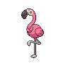

📖 英語版の図鑑説明
This Pokémon apparently ties the base of its neck into a knot so that energy stored in its belly does not escape from its beak.
日本語訳
腹に蓄えたエネルギーがくちばしから漏れないよう、首の付け根を結んでいるらしい。
📝 この図鑑文に出てくる英単語
| 英単語 | 意味 | 品詞 | レベル |
|---|---|---|---|
| apparently | どうやら〜らしい | 副詞 | 高校 |
| ties | 結ぶ | 動詞 | 中3 |
| base | 土台、根元 | 名詞 | 中3 |
| knot | 結び目 | 名詞 | 大学 |
| stored | たくわえられた | 動詞 | 中3 |
| belly | おなか | 名詞 | 高校 |
| escape | 逃げる | 動詞 | 中3 |
| beak | くちばし | 名詞 | 高校 |
文法ポイント so that 〜 は「〜するように、〜できるように」と目的を表す接続詞です。
💡 英語名「Flamigo」の由来
英語名「Flamigo」は、flamingo（フラミンゴ）とamigo（スペイン語で「友だち」）を組み合わせた名前と考えられている。フランス語の名前は「Flamenroule」で、flamant rose（フラミンゴ）、enrouler（巻く）から作られている。
出典 Bulbapedia
✨ カラミンゴの豆知識
フラミンゴのポケモンは『X・Y』の開発中にも作られていたが、没になった。そちらは本物のフラミンゴに近い姿だったという。
出典 Bulbapedia
📊 カラミンゴの種族値
HP82
こうげき115
ぼうぎょ74
とくこう75
とくぼう64
すばやさ90
合計 500
❓ よくある質問
- カラミンゴの英語名は？
- カラミンゴの英語名は「Flamigo」です。
- カラミンゴの英語名「Flamigo」の由来は？
- 英語名「Flamigo」は、flamingo（フラミンゴ）とamigo（スペイン語で「友だち」）を組み合わせた名前と考えられている。フランス語の名前は「Flamenroule」で、flamant rose（フラミンゴ）、enrouler（巻く）から作られている。
- カラミンゴは英語版の図鑑でどう説明されている？
- 「This Pokémon apparently ties the base of its neck into a knot so that energy stored in its belly does not escape from its beak.」と書かれています。日本語にすると「腹に蓄えたエネルギーがくちばしから漏れないよう、首の付け根を結んでいるらしい。」という意味です。
カラミンゴは第9世代（パルデア地方）のポケモンです。第9世代（パルデア地方）の英語名一覧 →